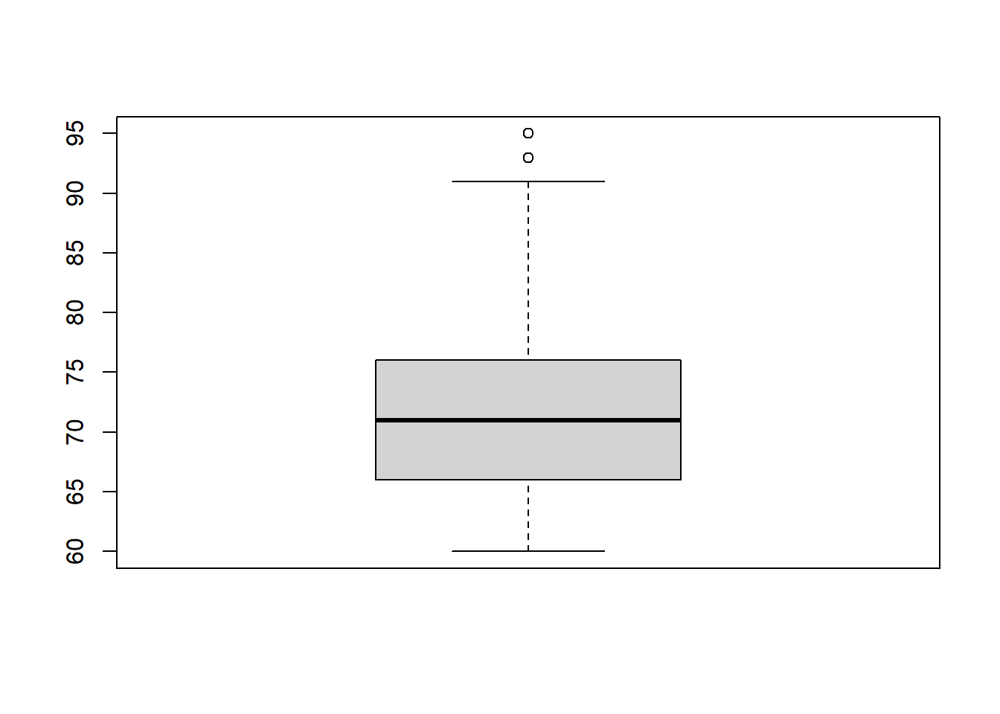
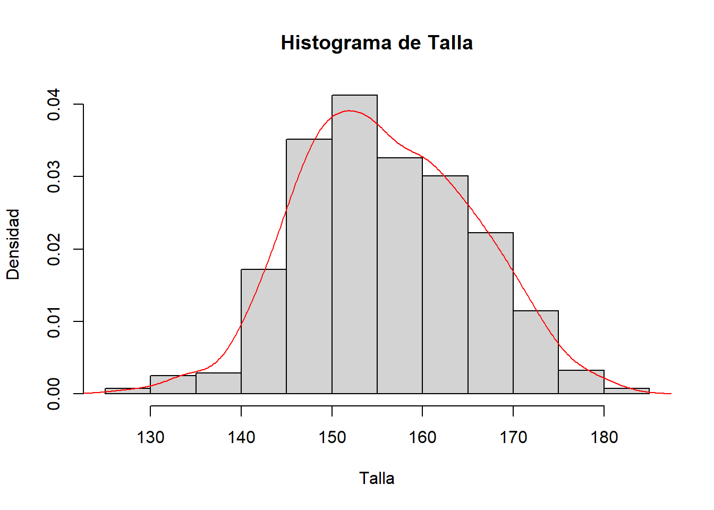
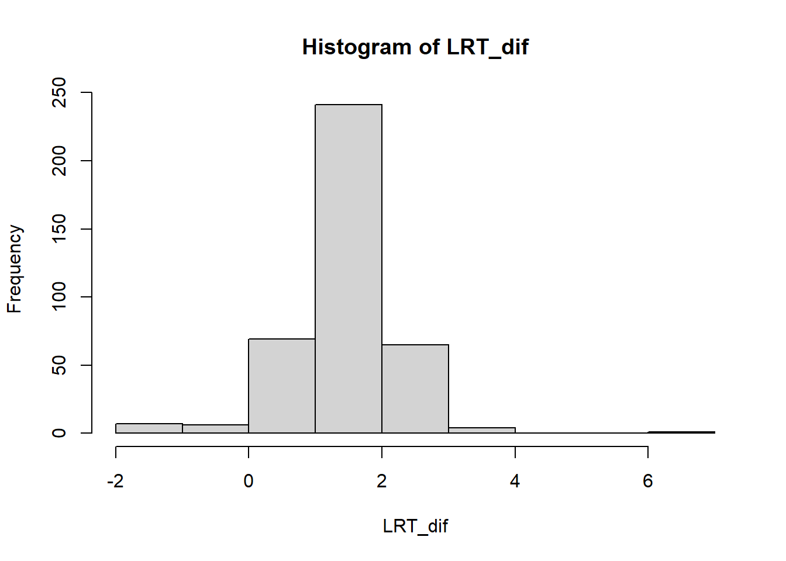
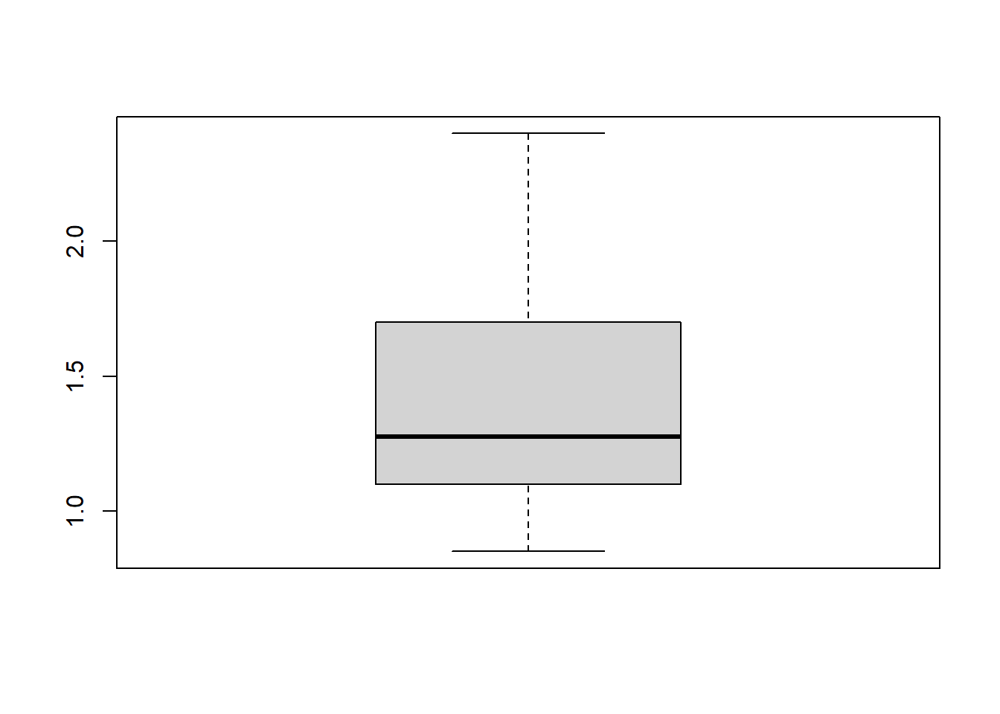
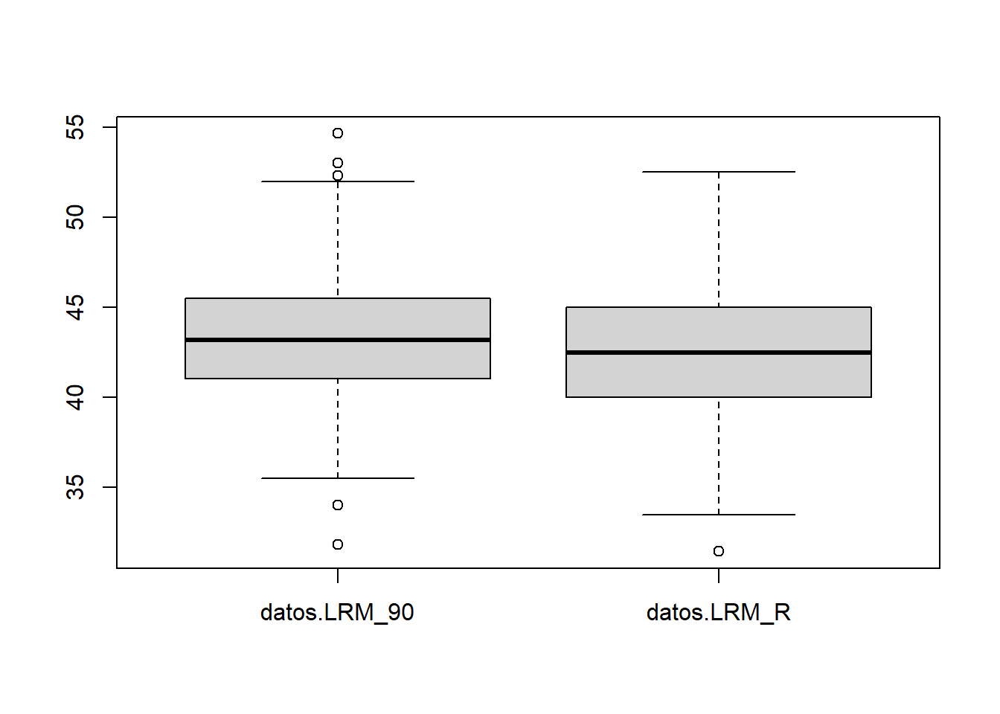
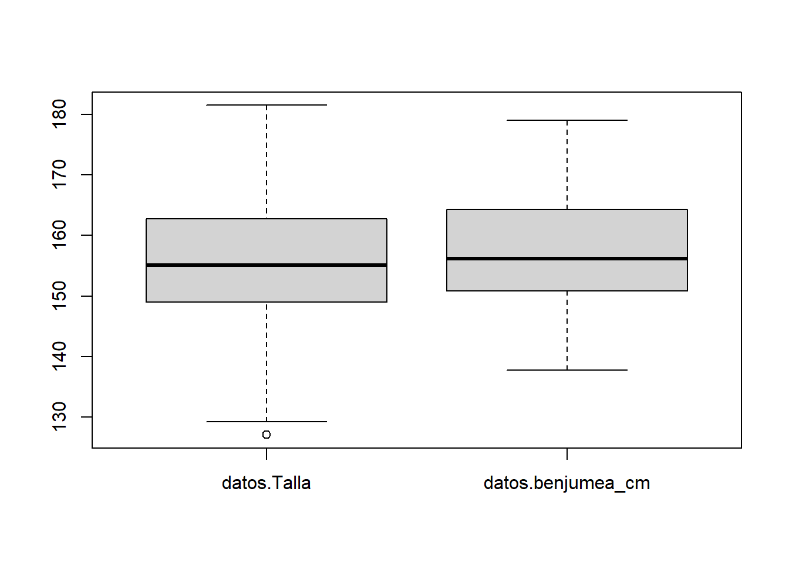
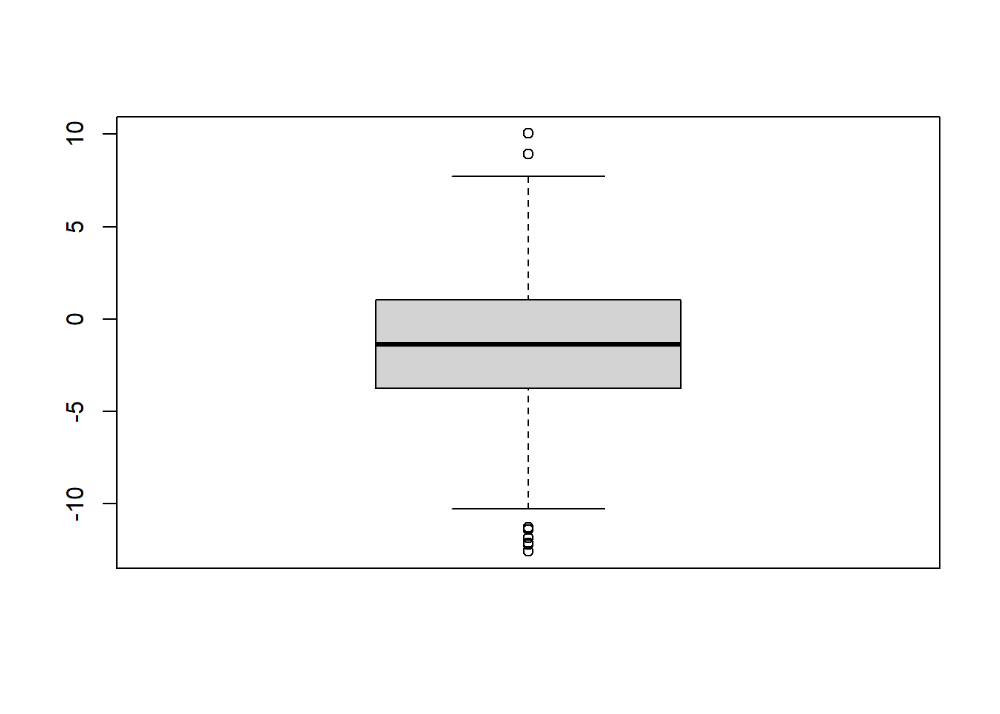
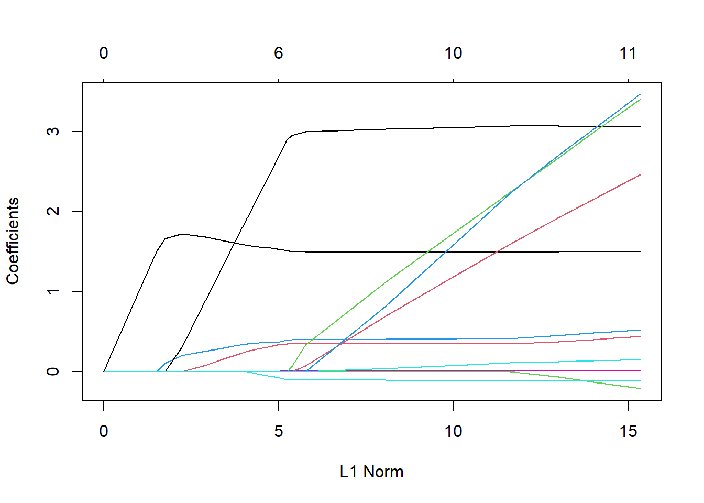

| Fecha | Localidad | Programa | Unidad_atencion | Sexo | Edad | Etnia | Peso | Talla | LRT_CM | LRT_A | LRM_90 | LRM_R |
|---|---|---|---|---|---|---|---|---|---|---|---|---|
| 2024-10-03 | Ciudad Bolivar | Centro Día Casa de la Sabiduría | Centro Día Casa de la Sabiduría Tejedores de Sueños | Masculino | 63 | Blanco-Mestizo | 101.80 | 177.00 | 57.50 | 57.65 | 52.00 | 52.50 |
| 2024-09-25 | Ciudad Bolivar | Centro Día Casa de la Sabiduría | Centro Día Casa de la Sabiduría Sierra Morena | Masculino | 77 | Blanco-Mestizo | 98.70 | 165.00 | 52.50 | 51.20 | 46.50 | 45.00 |
| 2024-10-16 | Engativa | Centro Día Casa de la Sabiduría | Centro Día Casa de la Sabiduría Los Cerezos | Masculino | 78 | Blanco-Mestizo | 97.65 | 175.70 | 58.45 | 56.90 | 50.60 | 51.35 |
| 2024-09-23 | Rafel Uribe | Centro Día Casa de la Sabiduría | Centro Día Casa de la Sabiduría Palabras Mayores | Masculino | 74 | Blanco-Mestizo | 97.40 | 172.95 | 55.80 | 54.10 | 51.05 | 49.00 |
| 2024-09-25 | Ciudad Bolivar | Centro Día Casa de la Sabiduría | Centro Día Casa de la Sabiduría Sierra Morena | Femenino | 70 | Blanco-Mestizo | 97.10 | 153.35 | 50.50 | 49.45 | 45.20 | 43.10 |
| 2024-09-09 | Engativa | Comunidad de Cuidado | Comunidad de Cuidado Bosque Popular | Masculino | 72 | Blanco-Mestizo | 95.60 | 174.40 | 56.70 | 55.10 | 50.85 | 48.15 |
Caso 1 Consultoría
Lectura de datos
Análisis descriptivo
Distribución, atípicos y test de normalidad
Sexo
| Sexo | n | porcentaje |
|---|---|---|
| Femenino | 283 | 50.717 |
| Masculino | 275 | 49.283 |

La muestra cuenta con 284 personas de sexo femenino y 275 masculino
Edad
Resumen de la variable Edad:
Min. 1st Qu. Median Mean 3rd Qu. Max.
60.00 66.00 71.00 71.79 76.00 95.00 Distribución de la variable Edad


Datos atípicos en la variable Edad:
| Programa | Unidad_atencion | Sexo | Edad | Etnia | Peso | Talla | LRT_CM | LRT_A | LRM_90 | LRM_R |
|---|---|---|---|---|---|---|---|---|---|---|
| Centro Día Casa de la Sabiduría | Centro Día Casa de la Sabiduría Los Cerezos | Masculino | 93 | Blanco-Mestizo | 59.3 | 170.25 | 53.55 | 52.45 | 46.35 | 46.85 |
| Comunidad de Cuidado | Comunidad de Cuidado Bosque Popular | Femenino | 95 | Blanco-Mestizo | 48.0 | 136.80 | 43.55 | 41.70 | 38.20 | 35.65 |
Pruebas de Normalidad:
Shapiro-Wilk normality test
data: datos$Edad
W = 0.97091, p-value = 4.496e-09
Lilliefors (Kolmogorov-Smirnov) normality test
data: datos$Edad
D = 0.082378, p-value = 1.168e-09El mínimo de edad en la muestra es 60 años, el máximo son 95 años, la media son 71 años y la mediana 71.77 años. Parece haber dos datos atípicos (93 y 95 años). No hay evidencia estadística de que la edad siga una distribución normal, el test Shapiro-Wilk arrojó un p-valor 7.771e-09, y el test Lilliefors muestra un p-valor de 1.5693-09.
Etnia
Resumen de la variable Etnia:
| Etnia | n | porcentaje |
|---|---|---|
| Afrocolombiano | 5 | 0.896 |
| Blanco-Mestizo | 546 | 97.849 |
| Indigena | 6 | 1.075 |
| Rrom | 1 | 0.179 |
Peso
Resumen de la variable Peso:
Min. 1st Qu. Median Mean 3rd Qu. Max.
34.20 54.66 62.80 63.34 70.35 101.80 Distribución de la variable Peso:

Distribución de la variable Peso distinguiendo por Sexo:

Datos atípicos en la variable Peso:
| Programa | Unidad_atencion | Sexo | Edad | Etnia | Peso | Talla | LRT_CM | LRT_A | LRM_90 | LRM_R |
|---|---|---|---|---|---|---|---|---|---|---|
| Centro Día Casa de la Sabiduría | Centro Día Casa de la Sabiduría Tejedores de Sueños | Masculino | 63 | Blanco-Mestizo | 101.80 | 177.00 | 57.50 | 57.65 | 52.00 | 52.50 |
| Centro Día Casa de la Sabiduría | Centro Día Casa de la Sabiduría Sierra Morena | Masculino | 77 | Blanco-Mestizo | 98.70 | 165.00 | 52.50 | 51.20 | 46.50 | 45.00 |
| Centro Día Casa de la Sabiduría | Centro Día Casa de la Sabiduría Los Cerezos | Masculino | 78 | Blanco-Mestizo | 97.65 | 175.70 | 58.45 | 56.90 | 50.60 | 51.35 |
| Centro Día Casa de la Sabiduría | Centro Día Casa de la Sabiduría Palabras Mayores | Masculino | 74 | Blanco-Mestizo | 97.40 | 172.95 | 55.80 | 54.10 | 51.05 | 49.00 |
| Centro Día Casa de la Sabiduría | Centro Día Casa de la Sabiduría Sierra Morena | Femenino | 70 | Blanco-Mestizo | 97.10 | 153.35 | 50.50 | 49.45 | 45.20 | 43.10 |
| Comunidad de Cuidado | Comunidad de Cuidado Bosque Popular | Masculino | 72 | Blanco-Mestizo | 95.60 | 174.40 | 56.70 | 55.10 | 50.85 | 48.15 |
| Centro Día Casa de la Sabiduría | Centro Día Casa de la Sabiduría Palabras Mayores | Masculino | 68 | Blanco-Mestizo | 95.10 | 167.80 | 52.35 | 51.50 | 46.45 | 45.45 |
| Comunidad de Cuidado | Comunidad de Cuidado Bosque Popular | Masculino | 66 | Blanco-Mestizo | 94.20 | 181.50 | 57.85 | 55.10 | 50.60 | 48.30 |
Datos atípicos cuando se distingue por Sexo:
Mujeres
| Programa | Unidad_atencion | Sexo | Edad | Etnia | Peso | Talla | LRT_CM | LRT_A | LRM_90 | LRM_R |
|---|---|---|---|---|---|---|---|---|---|---|
| Centro Día Casa de la Sabiduría | Centro Día Casa de la Sabiduría Sierra Morena | Femenino | 70 | Blanco-Mestizo | 97.1 | 153.35 | 50.5 | 49.45 | 45.2 | 43.1 |
| Centro Día Casa de la Sabiduría | Centro Día Casa de la Sabiduría La Fraternidad | Femenino | 72 | Blanco-Mestizo | 91.6 | 149.30 | 48.7 | 47.80 | 44.0 | 41.7 |
Hombres
| Programa | Unidad_atencion | Sexo | Edad | Etnia | Peso | Talla | LRT_CM | LRT_A | LRM_90 | LRM_R |
|---|---|---|---|---|---|---|---|---|---|---|
| Centro Día Casa de la Sabiduría | Centro Día Casa de la Sabiduría Tejedores de Sueños | Masculino | 63 | Blanco-Mestizo | 101.80 | 177.00 | 57.50 | 57.65 | 52.00 | 52.50 |
| Centro Día Casa de la Sabiduría | Centro Día Casa de la Sabiduría Sierra Morena | Masculino | 77 | Blanco-Mestizo | 98.70 | 165.00 | 52.50 | 51.20 | 46.50 | 45.00 |
| Centro Día Casa de la Sabiduría | Centro Día Casa de la Sabiduría Los Cerezos | Masculino | 78 | Blanco-Mestizo | 97.65 | 175.70 | 58.45 | 56.90 | 50.60 | 51.35 |
| Centro Día Casa de la Sabiduría | Centro Día Casa de la Sabiduría Palabras Mayores | Masculino | 74 | Blanco-Mestizo | 97.40 | 172.95 | 55.80 | 54.10 | 51.05 | 49.00 |
Pruebas de Normalidad:
Shapiro-Wilk normality test
data: datos$Peso
W = 0.98708, p-value = 7.563e-05
Lilliefors (Kolmogorov-Smirnov) normality test
data: datos$Peso
D = 0.047304, p-value = 0.004667El mínimo de peso en la muestra es 34.20 kg, el máximo son 101.8 kg, la media son 63.32 kg y la mediana 62.8 kg. En la muestra junta, parece haber ocho datos atípicos (101.80, 98.70, 97.65, 97.40, 97.10, 95.60, 95.10 y 94.20), cuando se separa por Sexo, parece haber dos datos atípicos en Femenino (97.10 y 91.6), y en Masculino cuatro (101.80, 98.70, 97.65 y 97.40). No hay evidencia estadística de que el peso siga una distribución normal, el test Shapiro-Wilk arrojó un p-valor 6.466e-05, y el test Lilliefors muestra un p-valor de 0.003945.
Talla
Resumen de la variable Talla:
Min. 1st Qu. Median Mean 3rd Qu. Max.
127.1 149.0 155.2 155.9 162.7 181.5 Distribución de la variable Talla:


Distribución de la variable Talla distinguiendo por Sexo:

Datos atípicos en la variable Talla:
| Programa | Unidad_atencion | Sexo | Edad | Etnia | Peso | Talla | LRT_CM | LRT_A | LRM_90 | LRM_R |
|---|---|---|---|---|---|---|---|---|---|---|
| Comunidad de Cuidado | Comunidad de Cuidado Libertad | Femenino | 72 | Blanco-Mestizo | 43 | 127.1 | 39 | 37 | 34 | 33.5 |
Datos atípicos cuando se distingue por Sexo:
Mujeres
| Programa | Unidad_atencion | Sexo | Edad | Etnia | Peso | Talla | LRT_CM | LRT_A | LRM_90 | LRM_R |
|---|---|---|---|---|---|---|---|---|---|---|
| Centro Día Casa de la Sabiduría | Centro Día Casa de la Sabiduría Los Cerezos | Femenino | 80 | Blanco-Mestizo | 48.7 | 133.00 | 42.10 | 39.70 | 37.10 | 36.30 |
| Centro Día Casa de la Sabiduría | Centro Día Casa de la Sabiduría Sierra Morena | Femenino | 78 | Blanco-Mestizo | 43.6 | 133.85 | 42.30 | 40.20 | 37.40 | 35.00 |
| Comunidad de Cuidado | Comunidad de Cuidado Libertad | Femenino | 72 | Blanco-Mestizo | 43.0 | 127.10 | 39.00 | 37.00 | 34.00 | 33.50 |
| Comunidad de Cuidado | Comunidad de Cuidado Gratitud | Femenino | 65 | Blanco-Mestizo | 40.2 | 129.25 | 38.00 | 36.85 | 31.85 | 31.45 |
| Comunidad de Cuidado | Comunidad de Cuidado Libertad | Femenino | 72 | Blanco-Mestizo | 37.0 | 132.55 | 41.20 | 38.20 | 35.50 | 34.50 |
| Comunidad de Cuidado | Comunidad de Cuidado Bello Horizonte | Femenino | 82 | Blanco-Mestizo | 34.2 | 133.90 | 41.05 | 39.90 | 35.80 | 35.70 |
Hombres
| Programa | Unidad_atencion | Sexo | Edad | Etnia | Peso | Talla | LRT_CM | LRT_A | LRM_90 | LRM_R |
|---|---|---|---|---|---|---|---|---|---|---|
| Comunidad de Cuidado | Comunidad de Cuidado Gratitud | Masculino | 76 | Blanco-Mestizo | 49.2 | 142.0 | 46.10 | 44.3 | 40.05 | 40.4 |
| Centro Día Casa de la Sabiduría | Centro Día Casa de la Sabiduría Palabras Mayores | Masculino | 72 | Blanco-Mestizo | 45.8 | 141.5 | 45.65 | 45.0 | 41.35 | 41.1 |
Pruebas de Normalidad:
Shapiro-Wilk normality test
data: datos$Talla
W = 0.99481, p-value = 0.05641
Lilliefors (Kolmogorov-Smirnov) normality test
data: datos$Talla
D = 0.038397, p-value = 0.04836El mínimo de talla en la muestra es 127.1 cm, el máximo son 181.5 cm, la media son 155.9 cm y la mediana 155.2 cm. En la muestra junta, parece haber un dato atípico (127.1), cuando se separa por Sexo, parece haber tres datos atípicos en Femenino (133.00, 127.10, 129.25 y 132.55), y en Masculino dos (142.00 y 141.50). El test Shapiro-Wilk arrojó un p-valor 0.05006 sugiriendo normalidad pero sin ser muy significativo , mientras que el test Lilliefors muestra un p-valor de 0.04416, por lo que no habría normalidad.
Longitud Rodilla Talón con cinta métrica LRT_CM
Resumen de la variable LRT_CM:
Min. 1st Qu. Median Mean 3rd Qu. Max.
38.00 46.60 48.65 49.00 51.45 59.00 Distribución de la variable LRT_CM:


Distribución de la variable LRT_CM distinguiendo por Sexo:

Datos atípicos en la variable LRT_CM:
| Programa | Unidad_atencion | Sexo | Edad | Etnia | Peso | Talla | LRT_CM | LRT_A | LRM_90 | LRM_R |
|---|---|---|---|---|---|---|---|---|---|---|
| Centro Día Casa de la Sabiduría | Centro Día Casa de La Sabiduría San David | Masculino | 70 | Blanco-Mestizo | 84.0 | 179.10 | 59 | 58.35 | 53.00 | 52.50 |
| Comunidad de Cuidado | Comunidad de Cuidado Libertad | Femenino | 72 | Blanco-Mestizo | 43.0 | 127.10 | 39 | 37.00 | 34.00 | 33.50 |
| Comunidad de Cuidado | Comunidad de Cuidado Gratitud | Femenino | 65 | Blanco-Mestizo | 40.2 | 129.25 | 38 | 36.85 | 31.85 | 31.45 |
Datos atípicos cuando se distingue por Sexo:
Mujeres
| Programa | Unidad_atencion | Sexo | Edad | Etnia | Peso | Talla | LRT_CM | LRT_A | LRM_90 | LRM_R |
|---|---|---|---|---|---|---|---|---|---|---|
| Comunidad de Cuidado | Comunidad de Cuidado Libertad | Femenino | 72 | Blanco-Mestizo | 43.0 | 127.10 | 39 | 37.00 | 34.00 | 33.50 |
| Comunidad de Cuidado | Comunidad de Cuidado Gratitud | Femenino | 65 | Blanco-Mestizo | 40.2 | 129.25 | 38 | 36.85 | 31.85 | 31.45 |
Hombres
| Programa | Unidad_atencion | Sexo | Edad | Etnia | Peso | Talla | LRT_CM | LRT_A | LRM_90 | LRM_R |
|---|---|---|---|---|---|---|---|---|---|---|
| Centro Día Casa de la Sabiduría | Centro Día Casa de La Sabiduría San David | Masculino | 70 | Blanco-Mestizo | 84 | 179.1 | 59 | 58.35 | 53 | 52.5 |
Pruebas de Normalidad:
Shapiro-Wilk normality test
data: datos$LRT_CM
W = 0.99389, p-value = 0.02391
Lilliefors (Kolmogorov-Smirnov) normality test
data: datos$LRT_CM
D = 0.044451, p-value = 0.01056El mínimo de LRT con cinta métrica en la muestra es 38 cm, el máximo son 59 cm, la media son 48.99 cm y la mediana 48.65 cm. En la muestra junta, parece haber tres datos atípicos (59, 39 y 38), cuando se separa por Sexo, parece haber dos datos atípicos en Femenino (39 y 38), y en Masculino uno (59). No hay evidencia estadística de que la LRT con cinta métrica siga una distribución normal, el test Shapiro-Wilk arrojó un p-valor 0.02122, y el test Lilliefors muestra un p-valor de 0.008985.
Longitud Rodilla Talón con Antropómetro LRT_A
Resumen de la variable LRT_A:
Min. 1st Qu. Median Mean 3rd Qu. Max.
36.85 44.90 47.40 47.54 50.00 58.35 Distribución de la variable LRT_A:


Distribución de la variable LRT_A distinguiendo por Sexo:

Datos atípicos en la variable LRT_A:
| Programa | Unidad_atencion | Sexo | Edad | Etnia | Peso | Talla | LRT_CM | LRT_A | LRM_90 | LRM_R |
|---|---|---|---|---|---|---|---|---|---|---|
| Centro Día Casa de la Sabiduría | Centro Día Casa de La Sabiduría San David | Masculino | 70 | Blanco-Mestizo | 84.0 | 179.10 | 59 | 58.35 | 53.00 | 52.50 |
| Comunidad de Cuidado | Comunidad de Cuidado Libertad | Femenino | 72 | Blanco-Mestizo | 43.0 | 127.10 | 39 | 37.00 | 34.00 | 33.50 |
| Comunidad de Cuidado | Comunidad de Cuidado Gratitud | Femenino | 65 | Blanco-Mestizo | 40.2 | 129.25 | 38 | 36.85 | 31.85 | 31.45 |
Datos atípicos cuando se distingue por Sexo:
Mujeres
| Programa | Unidad_atencion | Sexo | Edad | Etnia | Peso | Talla | LRT_CM | LRT_A | LRM_90 | LRM_R |
|---|---|---|---|---|---|---|---|---|---|---|
| Comunidad de Cuidado | Comunidad de Cuidado Libertad | Femenino | 72 | Blanco-Mestizo | 43.0 | 127.10 | 39.0 | 37.00 | 34.00 | 33.50 |
| Comunidad de Cuidado | Comunidad de Cuidado Gratitud | Femenino | 65 | Blanco-Mestizo | 40.2 | 129.25 | 38.0 | 36.85 | 31.85 | 31.45 |
| Comunidad de Cuidado | Comunidad de Cuidado Libertad | Femenino | 72 | Blanco-Mestizo | 37.0 | 132.55 | 41.2 | 38.20 | 35.50 | 34.50 |
Hombres
| Programa | Unidad_atencion | Sexo | Edad | Etnia | Peso | Talla | LRT_CM | LRT_A | LRM_90 | LRM_R |
|---|---|---|---|---|---|---|---|---|---|---|
| Centro Día Casa de la Sabiduría | Centro Día Casa de la Sabiduría Tejedores de Sueños | Masculino | 63 | Blanco-Mestizo | 101.8 | 177.0 | 57.5 | 57.65 | 52 | 52.5 |
| Centro Día Casa de la Sabiduría | Centro Día Casa de La Sabiduría San David | Masculino | 70 | Blanco-Mestizo | 84.0 | 179.1 | 59.0 | 58.35 | 53 | 52.5 |
Pruebas de Normalidad:
Shapiro-Wilk normality test
data: datos$LRT_A
W = 0.9947, p-value = 0.0507
Lilliefors (Kolmogorov-Smirnov) normality test
data: datos$LRT_A
D = 0.043557, p-value = 0.01345El mínimo de LRT con antropómetro en la muestra es 36.85 cm, el máximo son 58.35 cm, la media son 47.53 cm y la mediana 47.4 cm. En la muestra junta, parece haber tres datos atípicos (58.35, 37.00 y 36.85), cuando se separa por Sexo, parece haber tres datos atípicos en Femenino (37.00, 36.85 y 38.20), y en Masculino dos (57.65 y 58.35). No hay evidencia estadística de que la LRT con antropómetro siga una distribución normal, el test Shapiro-Wilk arrojó un p-valor 0.04419, y el test Lilliefors muestra un p-valor de 0.01168.
Longitud Rodilla-Maléolo a 90° LRM_90
Resumen de la variable LRM_90:
Min. 1st Qu. Median Mean 3rd Qu. Max.
31.85 41.06 43.20 43.32 45.50 54.65 Distribución de la variable LRM_90:

Distribución de la variable LRM_90 distinguiendo por Sexo:

Datos atípicos en la variable LRM_90:
| Programa | Unidad_atencion | Sexo | Edad | Etnia | Peso | Talla | LRT_CM | LRT_A | LRM_90 | LRM_R |
|---|---|---|---|---|---|---|---|---|---|---|
| Centro Día Casa de la Sabiduría | Centro Día Casa de La Sabiduría San David | Masculino | 70 | Blanco-Mestizo | 84.0 | 179.10 | 59.00 | 58.35 | 53.00 | 52.50 |
| Centro Día Casa de la Sabiduría | Centro Día Casa de La Sabiduría Tierra de Saberes | Masculino | 66 | Blanco-Mestizo | 76.0 | 161.70 | 51.55 | 50.40 | 54.65 | 44.90 |
| Comunidad de Cuidado | Comunidad de Cuidado Gratitud | Masculino | 65 | Blanco-Mestizo | 70.0 | 164.05 | 51.95 | 50.85 | 52.30 | 44.85 |
| Comunidad de Cuidado | Comunidad de Cuidado Bello Horizonte | Masculino | 75 | Blanco-Mestizo | 62.6 | 174.00 | 57.45 | 56.20 | 52.30 | 51.25 |
| Comunidad de Cuidado | Comunidad de Cuidado Libertad | Femenino | 72 | Blanco-Mestizo | 43.0 | 127.10 | 39.00 | 37.00 | 34.00 | 33.50 |
| Comunidad de Cuidado | Comunidad de Cuidado Gratitud | Femenino | 65 | Blanco-Mestizo | 40.2 | 129.25 | 38.00 | 36.85 | 31.85 | 31.45 |
Datos atípicos cuando se distingue por Sexo:
Mujeres
| Programa | Unidad_atencion | Sexo | Edad | Etnia | Peso | Talla | LRT_CM | LRT_A | LRM_90 | LRM_R |
|---|---|---|---|---|---|---|---|---|---|---|
| Comunidad de Cuidado | Comunidad de Cuidado Libertad | Femenino | 72 | Blanco-Mestizo | 43.0 | 127.10 | 39 | 37.00 | 34.00 | 33.50 |
| Comunidad de Cuidado | Comunidad de Cuidado Gratitud | Femenino | 65 | Blanco-Mestizo | 40.2 | 129.25 | 38 | 36.85 | 31.85 | 31.45 |
Hombres
| Programa | Unidad_atencion | Sexo | Edad | Etnia | Peso | Talla | LRT_CM | LRT_A | LRM_90 | LRM_R |
|---|---|---|---|---|---|---|---|---|---|---|
| Centro Día Casa de la Sabiduría | Centro Día Casa de La Sabiduría San David | Masculino | 70 | Blanco-Mestizo | 84 | 179.1 | 59.00 | 58.35 | 53.00 | 52.5 |
| Centro Día Casa de la Sabiduría | Centro Día Casa de La Sabiduría Tierra de Saberes | Masculino | 66 | Blanco-Mestizo | 76 | 161.7 | 51.55 | 50.40 | 54.65 | 44.9 |
Pruebas de Normalidad:
Shapiro-Wilk normality test
data: datos$LRM_90
W = 0.99331, p-value = 0.01393
Lilliefors (Kolmogorov-Smirnov) normality test
data: datos$LRM_90
D = 0.051373, p-value = 0.001307Longitud Rodilla-Maléolo la pierna totalmente estirada LRM_R
Resumen de la variable LRM_R:
Min. 1st Qu. Median Mean 3rd Qu. Max.
31.45 40.00 42.50 42.53 45.00 52.50 Distribución de la variable LRM_R:
Distribución de la variable LRM_R distinguiendo por Sexo:

Datos atípicos en la variable LRM_R:
| Programa | Unidad_atencion | Sexo | Edad | Etnia | Peso | Talla | LRT_CM | LRT_A | LRM_90 | LRM_R |
|---|---|---|---|---|---|---|---|---|---|---|
| Comunidad de Cuidado | Comunidad de Cuidado Gratitud | Femenino | 65 | Blanco-Mestizo | 40.2 | 129.25 | 38 | 36.85 | 31.85 | 31.45 |
Datos atípicos cuando se distingue por Sexo:
Mujeres
| Programa | Unidad_atencion | Sexo | Edad | Etnia | Peso | Talla | LRT_CM | LRT_A | LRM_90 | LRM_R |
|---|---|---|---|---|---|---|---|---|---|---|
| Comunidad de Cuidado | Comunidad de Cuidado Libertad | Femenino | 72 | Blanco-Mestizo | 43.0 | 127.10 | 39 | 37.00 | 34.00 | 33.50 |
| Comunidad de Cuidado | Comunidad de Cuidado Gratitud | Femenino | 65 | Blanco-Mestizo | 40.2 | 129.25 | 38 | 36.85 | 31.85 | 31.45 |
Hombres
| Programa | Unidad_atencion | Sexo | Edad | Etnia | Peso | Talla | LRT_CM | LRT_A | LRM_90 | LRM_R |
|---|---|---|---|---|---|---|---|---|---|---|
| Centro Día Casa de la Sabiduría | Centro Día Casa de la Sabiduría Tejedores de Sueños | Masculino | 63 | Blanco-Mestizo | 101.80 | 177.00 | 57.50 | 57.65 | 52.0 | 52.50 |
| Centro Día Casa de la Sabiduría | Centro Día Casa de la Sabiduría Los Cerezos | Masculino | 78 | Blanco-Mestizo | 97.65 | 175.70 | 58.45 | 56.90 | 50.6 | 51.35 |
| Centro Día Casa de la Sabiduría | Centro Día Casa de La Sabiduría San David | Masculino | 70 | Blanco-Mestizo | 84.00 | 179.10 | 59.00 | 58.35 | 53.0 | 52.50 |
| Comunidad de Cuidado | Comunidad de Cuidado Bello Horizonte | Masculino | 75 | Blanco-Mestizo | 62.60 | 174.00 | 57.45 | 56.20 | 52.3 | 51.25 |
| Comunidad de Cuidado | Comunidad de Cuidado Gratitud | Masculino | 84 | Blanco-Mestizo | 54.20 | 147.25 | 43.70 | 43.00 | 38.5 | 37.70 |
| Comunidad de Cuidado | Comunidad de Cuidado Gratitud | Masculino | 88 | Blanco-Mestizo | 52.00 | 151.40 | 46.25 | 45.05 | 39.2 | 37.75 |
Pruebas de Normalidad:
Shapiro-Wilk normality test
data: datos$LRM_R
W = 0.99533, p-value = 0.09192
Lilliefors (Kolmogorov-Smirnov) normality test
data: datos$LRM_R
D = 0.04725, p-value = 0.004743El mínimo de LRM con la pierna recta en la muestra es 31.45 cm, el máximo son 52.5 cm, la media son 42.53 cm y la mediana 42.50 cm. En la muestra junta, parece haber un dato atípico (31.45), cuando se separa por Sexo, parece haber dos datos atípicos en Femenino (33.50 y 31.45), y en Masculino cuatro (52.50, 51.35, 52.50, 51.25, 37.70 y 37.75). Con el test Shapiro-Wilk parece haber normalidad pues arrojó un p-valor 0.08377, mientras que el test Lilliefors muestra un p-valor de 0.004458, por lo que no habría normalidad.
Análisis de correlación
Existe una fuerte correlación lineal positiva entre la variable talla y cada una de las mediciones de la longitud rodilla-talón y rodilla-maléolo, considerarlas para los diferentes modelos de regresión parece ser una buena opción. La talla está correlacionada con el peso de forma moderada, por lo que valdría la pena explorar su contribución en los modelos propuestos. No parece haber una correlación lineal significativa entre la talla y la edad, sugiriendo que no sería necesario incluir la edad en los modelos propuestos.
En principio, dado que la relación entre cada una de las medidas de la longitud rodilla-talón y rodilla-maléolo presentan una relación lineal fuerte con la talla, se podría pensar que la que tenga una mayor correlación con la talla, es la que daría mejores estimaciones de la talla real. En este caso, la longitud rodilla-talón con antropómetro, es la que presenta una mayor correlación con la talla, por lo que posiblemente sea más preciso usar esta medida para estimar la talla real de los adultos mayores. Como sabemos, el antropómetro es una herramienta que no siempre es de fácil acceso y justamente queremos evaluar si existen diferencias significativas entre usar esta medición y las demás mediciones que sí son de fácil acceso y aplicación.
En ese orden de ideas, después de la longitud de rodilla talón con antropómetro, la longitud rodilla-talón con cinta métrica es la variable que tiene más correlación con la talla, luego sigue la longitud rodilla-maléolo con la pierna totalmente estirada y por último la longitud rodilla-maléolo con la pierna a 90 grados.
Hipótesis
Longitud rodilla-talón
Inicialmente se hace una comparación gráfica de ambas técnicas a través de un box-plot:

Según el gráfico de cajas (boxplot), parece que hay una pequeña diferencia entre las mediciones de la longitud desde la rodilla hasta el talón realizadas con cinta métrica y con antropómetro. Sin embargo, para estar seguros, es necesario hacer una prueba estadística más formal. Para esto, se calculan las diferencias entre las mediciones de ambos métodos y se verifica si esas diferencias siguen una distribución normal. Dependiendo del resultado, se elegirá la prueba estadística adecuada para comprobar si realmente no hay una diferencia significativa entre ambos tipos de medición.


Shapiro-Wilk normality test
data: LRT_dif
W = 0.90438, p-value < 2.2e-16
Lilliefors (Kolmogorov-Smirnov) normality test
data: LRT_dif
D = 0.11373, p-value < 2.2e-16Los resultados de dos pruebas estadísticas, Shapiro-Wilk y Lilliefors, mostraron un valor menor a 0.05. Esto significa que, con un nivel de confianza del 95%, no podemos decir que las diferencias entre las mediciones de rodilla-talón tomadas con una cinta métrica y con un antropómetro sigan una distribución normal. Por lo tanto, es necesario usar un tipo de prueba estadística diferente, que no dependa de suposiciones sobre la distribución de los datos, para analizar las diferencias en los promedios.
One-sample Sign-Test
data: LRT_dif
s = 535, p-value < 2.2e-16
alternative hypothesis: true median is not equal to 0
95 percent confidence interval:
1.40 1.55
sample estimates:
median of x
1.5
Achieved and Interpolated Confidence Intervals:
Conf.Level L.E.pt U.E.pt
Lower Achieved CI 0.9433 1.4 1.55
Interpolated CI 0.9500 1.4 1.55
Upper Achieved CI 0.9535 1.4 1.55Al principio, se pensó en usar la prueba de Wilcoxon, que es una prueba estadística no paramétrica para evaluar el promedio de las diferencias. Sin embargo, esta prueba asume que las diferencias entre las mediciones son simétricas, pero eso no ocurrió en nuestros datos, ya que el coeficiente de asimetría fue de -0.785, lo que muestra que las diferencias no son simétricas. Por eso, se decidió usar una prueba diferente llamada “prueba del signo para muestras pareadas”, que no necesita asumir normalidad ni simetría. Aunque esta prueba no da información sobre el promedio de las diferencias, sí permite evaluar la mediana de las diferencias.
El resultado de la prueba del signo mostró un p-valor de \(2.2 \times 10^{-16}\), lo que indica que hay suficiente evidencia estadística para rechazar la idea de que la mediana de las diferencias es igual a cero. Esto significa que las mediciones de la longitud rodilla-talón hechas con la cinta métrica no son equivalentes a las obtenidas con el antropómetro.
Análisis por separado
Por sexo
Masculino:


Shapiro-Wilk normality test
data: LRT_dif
W = 0.87196, p-value = 2.209e-14
Lilliefors (Kolmogorov-Smirnov) normality test
data: LRT_dif
D = 0.12779, p-value = 9.752e-12Los resultados de dos pruebas estadísticas, Shapiro-Wilk y Lilliefors, mostraron un valor menor a 0.05. Esto significa que, con un nivel de confianza del 95%, no podemos decir que las diferencias entre las mediciones de rodilla-talón tomadas con una cinta métrica y con un antropómetro en los adultos mayores de sexo masculino sigan una distribución normal.
One-sample Sign-Test
data: LRT_dif
s = 260, p-value < 2.2e-16
alternative hypothesis: true median is not equal to 0
95 percent confidence interval:
1.20 1.35
sample estimates:
median of x
1.3
Achieved and Interpolated Confidence Intervals:
Conf.Level L.E.pt U.E.pt
Lower Achieved CI 0.9466 1.2 1.35
Interpolated CI 0.9500 1.2 1.35
Upper Achieved CI 0.9599 1.2 1.35Al principio, se pensó en usar la prueba de Wilcoxon, pero las diferencias entre las mediciones no son simétricas ya que el coeficiente de asimetría fue de -1.69. Por eso, se decidió usar la prueba del signo para muestras pareadas para evaluar la mediana de las diferencias.
El resultado de la prueba del signo mostró un p-valor de \(2.2 \times 10^{-16}\), lo que indica que hay suficiente evidencia estadística para rechazar la idea de que la mediana de las diferencias es igual a cero. Esto significa que las mediciones de la longitud rodilla-talón hechas con la cinta métrica no son equivalentes a las obtenidas con el antropómetro, en los adultos mayores de sexo masculino.
Femenino:


Shapiro-Wilk normality test
data: LRT_dif
W = 0.89827, p-value = 7.241e-13
Lilliefors (Kolmogorov-Smirnov) normality test
data: LRT_dif
D = 0.12248, p-value = 4.681e-11Los resultados de dos pruebas estadísticas, Shapiro-Wilk y Lilliefors, mostraron un valor menor a 0.05. Esto significa que, con un nivel de confianza del 95%, no podemos decir que las diferencias entre las mediciones de rodilla-talón tomadas con una cinta métrica y con un antropómetro en las mujeres mayores sigan una distribución normal.
[1] 0.1677598Probrando la simetría de las diferencias, se obtuvo un valor p mayor que 0.05, por lo que no hay suficiente evidencia para rechazar la hipótesis de simetría, lo que sugiere que la distribución de las diferencias es lo suficientemente simétrica como para aplicar una prueba no paramétrica como Wilcoxon.
Wilcoxon signed rank test with continuity correction
data: LRT_dif
V = 39946, p-value < 2.2e-16
alternative hypothesis: true location is not equal to 0El resultado de la prueba de Wilcoxon mostró un p-valor de \(2.2 \times 10^{-16}\), lo que indica que hay suficiente evidencia estadística para rechazar la idea de que la mediana de las diferencias es igual a cero. Esto significa que las mediciones de la longitud rodilla-talón hechas con la cinta métrica no son equivalentes a las obtenidas con el antropómetro, en las mujeres mayores.
Por programa
Centro día:


Shapiro-Wilk normality test
data: LRT_dif
W = 0.91908, p-value = 1.059e-13
Lilliefors (Kolmogorov-Smirnov) normality test
data: LRT_dif
D = 0.094499, p-value = 5.563e-09Los resultados de dos pruebas estadísticas, Shapiro-Wilk y Lilliefors, mostraron un valor menor a 0.05. Esto significa que, con un nivel de confianza del 95%, no podemos decir que las diferencias entre las mediciones de rodilla-talón tomadas con una cinta métrica y con un antropómetro en los adultos mayores del centro día sigan una distribución normal.
[1] 0.1970562Probrando la simetría de las diferencias, se obtuvo un valor p mayor que 0.05, por lo que no hay suficiente evidencia para rechazar la hipótesis de simetría, lo que sugiere que la distribución de las diferencias es lo suficientemente simétrica como para aplicar una prueba no paramétrica como Wilcoxon.
Wilcoxon signed rank test with continuity correction
data: LRT_dif
V = 76401, p-value < 2.2e-16
alternative hypothesis: true location is not equal to 0El resultado de la prueba de Wilcoxon mostró un p-valor de \(2.2 \times 10^{-16}\), lo que indica que hay suficiente evidencia estadística para rechazar la idea de que la mediana de las diferencias es igual a cero. Esto significa que las mediciones de la longitud rodilla-talón hechas con la cinta métrica no son equivalentes a las obtenidas con el antropómetro, en los adultos mayores del centro día.
Comunidad de cuidado


Shapiro-Wilk normality test
data: LRT_dif
W = 0.86025, p-value = 3.071e-11
Lilliefors (Kolmogorov-Smirnov) normality test
data: LRT_dif
D = 0.1644, p-value = 8.88e-12Los resultados de dos pruebas estadísticas, Shapiro-Wilk y Lilliefors, mostraron un valor menor a 0.05. Esto significa que, con un nivel de confianza del 95%, no podemos decir que las diferencias entre las mediciones de rodilla-talón tomadas con una cinta métrica y con un antropómetro en los adultos mayores de las comunidades de cuidado sigan una distribución normal.
One-sample Sign-Test
data: LRT_dif
s = 155, p-value < 2.2e-16
alternative hypothesis: true median is not equal to 0
95 percent confidence interval:
1.45 1.65
sample estimates:
median of x
1.6
Achieved and Interpolated Confidence Intervals:
Conf.Level L.E.pt U.E.pt
Lower Achieved CI 0.9386 1.45 1.65
Interpolated CI 0.9500 1.45 1.65
Upper Achieved CI 0.9574 1.45 1.65Al principio, se pensó en usar la prueba de Wilcoxon, pero las diferencias entre las mediciones no son simétricas ya que el coeficiente de asimetría fue de -1.64. Por eso, se decidió usar la prueba del signo para muestras pareadas para evaluar la mediana de las diferencias.
El resultado de la prueba del signo mostró un p-valor de \(2.2 \times 10^{-16}\), lo que indica que hay suficiente evidencia estadística para rechazar la idea de que la mediana de las diferencias es igual a cero. Esto significa que las mediciones de la longitud rodilla-talón hechas con la cinta métrica no son equivalentes a las obtenidas con el antropómetro, en los adultos mayores de las comunidades de cuidado.
Por etnia
Blanco-Mestizo


Shapiro-Wilk normality test
data: LRT_dif
W = 0.90463, p-value < 2.2e-16
Lilliefors (Kolmogorov-Smirnov) normality test
data: LRT_dif
D = 0.11525, p-value < 2.2e-16Los resultados de dos pruebas estadísticas, Shapiro-Wilk y Lilliefors, mostraron un valor menor a 0.05. Esto significa que, con un nivel de confianza del 95%, no podemos decir que las diferencias entre las mediciones de rodilla-talón tomadas con una cinta métrica y con un antropómetro en los adultos mayores Blancos-Mestizos sigan una distribución normal.
One-sample Sign-Test
data: LRT_dif
s = 523, p-value < 2.2e-16
alternative hypothesis: true median is not equal to 0
95 percent confidence interval:
1.429546 1.550000
sample estimates:
median of x
1.5
Achieved and Interpolated Confidence Intervals:
Conf.Level L.E.pt U.E.pt
Lower Achieved CI 0.9460 1.4500 1.55
Interpolated CI 0.9500 1.4295 1.55
Upper Achieved CI 0.9558 1.4000 1.55Al principio, se pensó en usar la prueba de Wilcoxon, pero las diferencias entre las mediciones no son simétricas ya que el coeficiente de asimetría fue de -0.78. Por eso, se decidió usar la prueba del signo para muestras pareadas para evaluar la mediana de las diferencias.
El resultado de la prueba del signo mostró un p-valor de \(2.2 \times 10^{-16}\), lo que indica que hay suficiente evidencia estadística para rechazar la idea de que la mediana de las diferencias es igual a cero. Esto significa que las mediciones de la longitud rodilla-talón hechas con la cinta métrica no son equivalentes a las obtenidas con el antropómetro, en los adultos mayores Blancos-Mestizos.
Afrocolombiano, indigenas, Rrom


Shapiro-Wilk normality test
data: LRT_dif
W = 0.89611, p-value = 0.1413
Lilliefors (Kolmogorov-Smirnov) normality test
data: LRT_dif
D = 0.25624, p-value = 0.02858Uno de los resultados de las pruebas estadísticas, Shapiro-Wilk y Lilliefors, mostró un valor menor a 0.05 y la otra un valor mayor. Dado que de estas etnias solo hay 12 adultos mayores, las pruebas son más sensibles y pueden dar resultados menos confiables. Por esa razón, se va a evaluar la simetría de las diferencias para no realizar la prueba que asume normalidad.
[1] 0.1925247Probrando la simetría de las diferencias, se obtuvo un valor p mayor que 0.05, por lo que no hay suficiente evidencia para rechazar la hipótesis de simetría, lo que sugiere que la distribución de las diferencias es lo suficientemente simétrica como para aplicar una prueba no paramétrica como Wilcoxon.
Wilcoxon signed rank test with continuity correction
data: LRT_dif
V = 78, p-value = 0.002516
alternative hypothesis: true location is not equal to 0El resultado de la prueba de Wilcoxon mostró un p-valor menor a 0.5, lo que indica que hay suficiente evidencia estadística para rechazar la idea de que la mediana de las diferencias es igual a cero. Sin embargo, la prueba no puede calcular el p-valor exacto debido a la presencia de valores repetidos en las diferencias, por lo que se va a realizar el test del signo.
One-sample Sign-Test
data: LRT_dif
s = 12, p-value = 0.0004883
alternative hypothesis: true median is not equal to 0
95 percent confidence interval:
1.060636 1.700000
sample estimates:
median of x
1.275
Achieved and Interpolated Confidence Intervals:
Conf.Level L.E.pt U.E.pt
Lower Achieved CI 0.8540 1.1500 1.7
Interpolated CI 0.9500 1.0606 1.7
Upper Achieved CI 0.9614 1.0500 1.7El resultado de la prueba del signo mostró un p-valor menor a 0.5, lo que indica que hay suficiente evidencia estadística para rechazar la idea de que la mediana de las diferencias es igual a cero. Esto significa que las mediciones de la longitud rodilla-talón hechas con la cinta métrica no son equivalentes a las obtenidas con el antropómetro, en los adultos mayores afrocolombiano, indigenas o Rrom.
Longitud rodilla-maléolo
Inicialmente se hace una comparación gráfica de ambas técnicas a través de un box-plot:

Según el boxplot, se puede observar que sí existe una leve diferencia entre las distribuciones de las mediciones de la longitud rodilla maléolo con la pierna a 90° y con la pierna completamente estirada. Sin embargo, es necesario, realizar una prueba estadística formal para concluir algo, por lo que se calculan las diferencias entre ambos métodos y se les aplica un test de normalidad para elegir qué prueba utilizar para evaluar la hipótesis nula de que la medición longitud rodilla-maléolo con la pierna completamente estirada es igual a la medición de la longitud rodilla-maléolo con la pierna a \(90°\).


Shapiro-Wilk normality test
data: LRM_dif
W = 0.87437, p-value < 2.2e-16
Lilliefors (Kolmogorov-Smirnov) normality test
data: LRM_dif
D = 0.085105, p-value = 2.399e-10Dado que en ambos test, Shapiro-Wilk y Lilliefors, se obtuvo un p-valor menor a \(0.05\), entonces, con una significancia del \(5\%\), no hay evidencia estadística de que las diferencias entre las mediciones rodilla-talón con cinta métrica y con antropómetro sigan una distribució normal. Por lo tanto, se hace necesario realizar un test no paramétrico para media de las diferencias.
One-sample Sign-Test
data: LRM_dif
s = 454, p-value < 2.2e-16
alternative hypothesis: true median is not equal to 0
95 percent confidence interval:
0.75 0.90
sample estimates:
median of x
0.85
Achieved and Interpolated Confidence Intervals:
Conf.Level L.E.pt U.E.pt
Lower Achieved CI 0.9433 0.75 0.9
Interpolated CI 0.9500 0.75 0.9
Upper Achieved CI 0.9535 0.75 0.9Nuevamente, se consideró aplicar la prueba de Wilcoxon para evaluar la media de las diferencias, pero esta prueba no se aplicó ya que el coeficiente de asimetría obtenido fue de \(2.022\). Este valor indica una falta de simetría en las diferencias de las mediciones. Por esta razón, de nuevo se optó por utilizar la prueba del signo para muestras pareadas.
El resultado de la prueba del signo arrojó un p-valor de \(2.2 \times 10^{-16}\), indicando evidencia estadística suficiente para rechazar la hipótesis nula de que la mediana de las diferencias es igual a cero. Por lo tanto, se concluye que las mediciones de la longitud rodilla-maléolo realizadas con la pierna completamente estirada no son equivalentes a las obtenidas con la pierna a \(90°\).
Talla real y estimación Benjumea (LRT) con cinta métrica
Primero se realiza el cálculo de la estimación de la talla utilizando las fórmulas de Benjumea que tienen en cuenta las variables Sexo, Edad, Etnia y longitud rodilla-talón con cinta métrica. Hay que tener en cuenta que en la muestra hay un individuo cuya Etnia es “Rrom”, para este individuo no existe una fórmula de Benjumea para estimar su talla, por lo que no se tuvo en cuenta para la evaluación de la hipótesis de que la media de la diferencia entre la estimación de la talla por medio de las fórmulas de Benjumea y la talla real es cero.
Como antes, se hizo un análisis visual a través de un box-plot, donde se observa que aparentemente no hay una diferencia entre la estimación de la talla con las fórmulas de Benjumea con cinta métrica y la talla real. Sin embargo, es necesario realizar una prueba estadística formal para concluir.

Se calculan las diferencias entre la talla real y la estimación de la talla con las fórmulas de Benjumea con cinta métrica, luego, a estas diferencias se les aplica el test de Sahpiro-Wilk para normalidad y el test Lilliefors de normalidad, esto para decidir qué test utilizar para evaluar la media de las diferencias.


Shapiro-Wilk normality test
data: talla_dif
W = 0.99626, p-value = 0.2142
Lilliefors (Kolmogorov-Smirnov) normality test
data: talla_dif
D = 0.024627, p-value = 0.5671En ambos test, se obtiene un p-valor mayor a \(0.05\), por lo que se afirma, que con una significancia del \(5\%\), existe evidencia estadística de que las diferencias siguen una distribución normal, por lo tanto, para evaluar la media de las diferencias, se puede implementar una prueba \(t\) para muestras pareadas.
One Sample t-test
data: talla_dif
t = -9.2675, df = 556, p-value < 2.2e-16
alternative hypothesis: true mean is not equal to 0
95 percent confidence interval:
-1.727021 -1.122969
sample estimates:
mean of x
-1.424995 Luego de aplicar la prueba \(t\), con una significancia del \(5\%\), existe evidencia estadística para rechazar la hipótesis nula ya que el p-valor es \(2.2 \times 10^{-16}\), por lo tanto, se concluye que la media de las diferencias entre la talla real y la estimación con las fórmulas de Benjumea con cinta métrica no es cero, luego, parece que las estimaciones no son cercanas a la talla real.
El MSE del modelo de Benjumea sobre nuestros datos es el siguiente:
[1] 15.176Sin los outliers


Shapiro-Wilk normality test
data: talla_dif1
W = 0.9962, p-value = 0.2126
Lilliefors (Kolmogorov-Smirnov) normality test
data: talla_dif1
D = 0.024302, p-value = 0.6001
One Sample t-test
data: talla_dif1
t = -9.2432, df = 548, p-value < 2.2e-16
alternative hypothesis: true mean is not equal to 0
95 percent confidence interval:
-1.637236 -1.063330
sample estimates:
mean of x
-1.350283 También da que la diferencia no es cero.
Talla real y estimación Benjumea (LRT) con antropómetro
Primero se realiza el cálculo de la estimación de la talla utilizando las fórmulas de Benjumea que tienen en cuenta las variables Sexo, Edad, Etnia y longitud rodilla-talón con antropómetro. Hay que tener en cuenta que en la muestra hay un individuo cuya Etnia es “Rrom”, para este individuo no existe una fórmula de Benjumea para estimar su talla, por lo que no se tuvo en cuenta para la evaluación de la hipótesis de que la media de la diferencia entre la estimación de la talla por medio de las fórmulas de Benjumea y la talla real es cero.
Como antes, se hizo un análisis visual a través de un box-plot, donde se observa que aparentemente no hay una diferencia entre la estimación de la talla con las fórmulas de Benjumea con antropómetro y la talla real. Sin embargo, es necesario realizar una prueba estadística formal para concluir.
Se calculan las diferencias entre la talla real y la estimación de la talla con las fórmulas de Benjumea con antropómetro, luego, a estas diferencias se les aplica el test de Sahpiro-Wilk para normalidad y el test Lilliefors de normalidad, esto para decidir qué test utilizar para evaluar la media de las diferencias.


Shapiro-Wilk normality test
data: talla_dif
W = 0.99668, p-value = 0.3088
Lilliefors (Kolmogorov-Smirnov) normality test
data: talla_dif
D = 0.025041, p-value = 0.54En ambos test, se obtiene un p-valor mayor a \(0.05\), por lo que se afirma, que con una significancia del \(5\%\), existe evidencia estadística de que las diferencias siguen una distribución normal, por lo tanto, para evaluar la media de las diferencias, se puede implementar una prueba \(t\) para muestras pareadas.
One Sample t-test
data: talla_dif
t = 7.1182, df = 556, p-value = 3.392e-12
alternative hypothesis: true mean is not equal to 0
95 percent confidence interval:
0.7485775 1.3191627
sample estimates:
mean of x
1.03387 Luego de aplicar la prueba \(t\), con una significancia del \(5\%\), existe evidencia estadística para rechazar la hipótesis nula ya que el p-valor es \(4.103 \times 10^{-12}\), por lo tanto, se concluye que la media de las diferencias entre la talla real y la estimación con las fórmulas de Benjumea con antropómetro no es cero, luego, parece que las estimaciones no son cercanas a la talla real.
El MSE del modelo de Benjumea sobre nuestros datos es el siguiente:
[1] 12.79804Sin los outliers


Shapiro-Wilk normality test
data: talla_dif1
W = 0.99621, p-value = 0.2126
Lilliefors (Kolmogorov-Smirnov) normality test
data: talla_dif1
D = 0.024767, p-value = 0.5667
One Sample t-test
data: talla_dif1
t = 7.9431, df = 550, p-value = 1.119e-14
alternative hypothesis: true mean is not equal to 0
95 percent confidence interval:
0.8340581 1.3821008
sample estimates:
mean of x
1.108079 También da que la diferencia no es cero.
Talla real y estimación Arango Zamor (LRM) a \(90°\)
Primero se realiza el cálculo de la estimación de la talla utilizando las fórmulas de Arango y Zamora que tienen en cuenta las variables Sexo, Edad y longitud rodilla-maléolo a \(90°\).
Como antes, se hizo un análisis visual a través de un box-plot, donde se observa que aparentemente no hay una diferencia entre la estimación de la talla con las fórmulas de Arango y Zamora con la pierna a \(90°\) y la talla real. Sin embargo, es necesario realizar una prueba estadística formal para concluir.

Se calculan las diferencias entre la talla real y la estimación de la talla con las fórmulas de Arango y Zamora con la pierna a \(90°\), luego, a estas diferencias se les aplica el test de Sahpiro-Wilk para normalidad y el test Lilliefors de normalidad, esto para decidir qué test utilizar para evaluar la media de las diferencias.


Shapiro-Wilk normality test
data: talla_dif
W = 0.99569, p-value = 0.1279
Lilliefors (Kolmogorov-Smirnov) normality test
data: talla_dif
D = 0.026005, p-value = 0.4767En ambos test, se obtiene un p-valor mayor a \(0.05\), por lo que se afirma, que con una significancia del \(5\%\), existe evidencia estadística de que las diferencias siguen una distribución normal, por lo tanto, para evaluar la media de las diferencias, se puede implementar una prueba \(t\) para muestras pareadas.
One Sample t-test
data: talla_dif
t = 3.9629, df = 557, p-value = 8.369e-05
alternative hypothesis: true mean is not equal to 0
95 percent confidence interval:
0.3767971 1.1174247
sample estimates:
mean of x
0.7471109 Luego de aplicar la prueba \(t\), con una significancia del \(5\%\), existe evidencia estadística para rechazar la hipótesis nula ya que el p-valor es \(9.685 \times 10^{-12}\), por lo tanto, se concluye que la media de las diferencias entre la talla real y la estimación con las fórmulas de Arango y Zamora con la pierna a \(90°\) no es cero, luego, parece que las estimaciones no son cercanas a la talla real.
El MSE del modelo de Arango y Zamora sobre nuestros datos es el siguiente:
[1] 20.35563Sin los outliers


Shapiro-Wilk normality test
data: talla_dif1
W = 0.99728, p-value = 0.4991
Lilliefors (Kolmogorov-Smirnov) normality test
data: talla_dif1
D = 0.029807, p-value = 0.2727
One Sample t-test
data: talla_dif1
t = 4.5435, df = 552, p-value = 6.799e-06
alternative hypothesis: true mean is not equal to 0
95 percent confidence interval:
0.4687419 1.1826908
sample estimates:
mean of x
0.8257164 También da que la diferencia no es cero.
Talla real y estimación Arango Zamor (LRM) con la pierna estirada
Primero se realiza el cálculo de la estimación de la talla utilizando las fórmulas de Arango y Zamora que tienen en cuenta las variables Sexo, Edad y longitud rodilla-maléolo con la pierna estirada.
Como antes, se hizo un análisis visual a través de un box-plot, donde se observa que aparentemente no hay una diferencia entre la estimación de la talla con las fórmulas de Arango y Zamora con la pierna estirada y la talla real. Sin embargo, es necesario realizar una prueba estadística formal para concluir.

Se calculan las diferencias entre la talla real y la estimación de la talla con las fórmulas de Arango y Zamora con la pierna a estirada, luego, a estas diferencias se les aplica el test de Sahpiro-Wilk para normalidad y el test Lilliefors de normalidad, esto para decidir qué test utilizar para evaluar la media de las diferencias.


Shapiro-Wilk normality test
data: talla_dif
W = 0.99477, p-value = 0.05418
Lilliefors (Kolmogorov-Smirnov) normality test
data: talla_dif
D = 0.023066, p-value = 0.6685En ambos test, se obtiene un p-valor mayor a \(0.05\), por lo que se afirma, que con una significancia del \(5\%\), existe evidencia estadística de que las diferencias siguen una distribución normal, por lo tanto, para evaluar la media de las diferencias, se puede implementar una prueba \(t\) para muestras pareadas.
One Sample t-test
data: talla_dif
t = 9.234, df = 557, p-value < 2.2e-16
alternative hypothesis: true mean is not equal to 0
95 percent confidence interval:
1.342498 2.067959
sample estimates:
mean of x
1.705228 Luego de aplicar la prueba \(t\), con una significancia del \(5\%\), existe evidencia estadística para rechazar la hipótesis nula ya que el p-valor es \(2.2 \times 10^{-16}\), por lo tanto, se concluye que la media de las diferencias entre la talla real y la estimación con las fórmulas de Arango y Zamora con la pierna estirada no es cero, luego, parece que las estimaciones no son cercanas a la talla real.
El MSE del modelo de Arango y Zamora sobre nuestros datos es el siguiente:
[1] 21.90273Modelos
A continuación el resumen de la evaluación de las hipótesis de interés:
- La diferencia en las mediciones de LRT con antropómetro y con cinta métrica resultó ser estadísticamente significativa.
- La diferencia en las mediciones de LRM con la pierna a \(90°\) y la pierna estirada resultó ser estadísticamente significativa.
Estos resultados sigieren que:
- No es posible determinar que las mediciones de LRT con la cinta métrica sean iguales a las obtenidad con antropómetro. Asumiendo que la medición con antropómetro es más exacta, las mediciones con la cinta métrica suelen sobreestimar en promedio a las del antropómetro.
- Tampoco es posible determinar que las mediciones de LRM con la pierna a \(90°\) y con la pierna estirada sean iguales. La medición con la pierna estirada suele ser en promedio menor a la medición hecha con la pierna a \(90°\).
Los resultados obtenidos al evaluar las fórmulas de Benjumea y de Arango y Zamora en mustra de adultos mayores que atiende la SDIS, parecen no tener muy buenos resultados a la hora de estimar la talla de los adultos mayores.
Dado estos resultados, se concluye que se requiere de fórmulas específicas para la población que atiende la SDIS. Además, se deberá ajustar estos modelos para las cuatro mediciones pues la evaluación de las hipótesis no dieron indicios de la igualdad entre los métodos de las mediciones.
Selección del mejor modelo usando LRT_A
Inicialmente, se hará la selección del mejor modelo para LRT_A mediante un enfoque predictivo.
A continuación se hace una búsqueda del mejor modelo por cada número de posibles combinaciones de variables. Primero se hará la búsqueda usando todo el conjunto de datos.
Subset selection object
Call: regsubsets.formula(Talla ~ LRT_A + Peso + Edad + Sexo + Etnia +
Programa, datos, nbest = 1, nvmax = 10)
8 Variables (and intercept)
Forced in Forced out
LRT_A FALSE FALSE
Peso FALSE FALSE
Edad FALSE FALSE
SexoMasculino FALSE FALSE
EtniaBlanco-Mestizo FALSE FALSE
EtniaIndigena FALSE FALSE
EtniaRrom FALSE FALSE
ProgramaComunidad de Cuidado FALSE FALSE
1 subsets of each size up to 8
Selection Algorithm: exhaustive
LRT_A Peso Edad SexoMasculino EtniaBlanco-Mestizo EtniaIndigena
1 ( 1 ) "*" " " " " " " " " " "
2 ( 1 ) "*" " " " " "*" " " " "
3 ( 1 ) "*" " " "*" "*" " " " "
4 ( 1 ) "*" "*" "*" "*" " " " "
5 ( 1 ) "*" " " "*" "*" "*" "*"
6 ( 1 ) "*" " " "*" "*" "*" "*"
7 ( 1 ) "*" "*" "*" "*" "*" "*"
8 ( 1 ) "*" "*" "*" "*" "*" "*"
EtniaRrom ProgramaComunidad de Cuidado
1 ( 1 ) " " " "
2 ( 1 ) " " " "
3 ( 1 ) " " " "
4 ( 1 ) " " " "
5 ( 1 ) " " " "
6 ( 1 ) "*" " "
7 ( 1 ) "*" " "
8 ( 1 ) "*" "*" \(R^2\), \(R^2\) ajustado, SCE, y BIC para cada mejor modelo del correspondiente tamaño:
[1] 0.8698667 0.8801420 0.8867299 0.8869827 0.8873673 0.8877334 0.8879118
[8] 0.8879344[1] 0.8696326 0.8797100 0.8861165 0.8861653 0.8863471 0.8865109 0.8864852
[8] 0.8863014[1] 6553.144 6035.711 5703.960 5691.228 5671.863 5653.429 5644.443 5643.306[1] -1125.223 -1164.794 -1190.016 -1184.938 -1180.516 -1176.008 -1170.571
[8] -1164.359Usando el criterio BIC, el mejor modelo es el de 3 variables:
[1] 3

Usando el \(R^2\) ajustado, se sugiere un modelo con 5 variables:

Los coeficientes del mejor modelo usando el criterio de BIC son:
(Intercept) LRT_A Edad SexoMasculino
58.6716838 2.1887673 -0.1154329 3.0592396 Esto sugiere usar el modelo \(Talla = 58.67 + 2.19 LRT\_A - 0.12Edad + 3.06Sexo\),
\[Sexo = \begin{cases} 1 & \text{si sexo = hombre} \\ 0 & \text{si sexo = mujer} \end{cases}\]
Ahora se hará la búsqueda del mejor modelo usando K - fold cross validation con el fin de calcular directamente los errores de predicción sobre los datos de testeo y evitar así el sobreajuste.
- Se crean K - folds (pliegues) de aproximadamente igual tamaño. En este caso fijamos \(k = 10\). Como tenemos \(558\) datos, cada pliegue será de tamaño 55 o 56.
- El \(k-ésimo\) pliegue servirá para testear, y los demás pliegues se juntan para entrenar los modelos. Osea que se usará un \(90\%\) de los datos para entrenamiento y \(10\%\) para test.
- Para \(k = 1,\cdots,10,\) se hace la búsqueda del mejor modelo para cada número de variables y se calcula el MSE.
- Luego, se promedia el MSE a través de los \(10\) pliegues y se escoge el tamaño de modelo con menor MSE promedio.
- Finalmente, se hace la búsqueda del mejor modelo por cada número de variables usando todos los datos disponibles y se escoge el modelo asociado al tamaño del modelo obtenido en la validación cruzada.
Tamaño de los pliegues:
folds
1 2 3 4 5 6 7 8 9 10
56 56 56 56 56 56 56 56 55 55 MSE promedio a través de los \(10\) pliegues para cada número de variables incluídas en el modelo:
Reordering variables and trying again: 1 2 3 4 5 6 7
11.82329 10.93287 10.37418 10.64898 10.69236 10.62427 10.60688 El MSE se minimiza usando un modelo de 3 variables:

Se busca nuevamente el mejor modelo de tres variables usando todos los datos:
[1] -1125.223 -1164.794 -1190.016 -1184.938 -1180.516 -1176.008 -1170.571
[8] -1164.359 (Intercept) LRT_A Edad SexoMasculino
58.6716838 2.1887673 -0.1154329 3.0592396 Casualmente volvió a dar el mismo modelo con tres variables que incluye LRT_A, la Edad y el Sexo. Esto es seguramente porque las demás variables no contribuyen significativamente a la presición predictiva de los modelos.
Ahora se validarán los supuestos para el mejor modelo obtenido:
Call:
lm(formula = Talla ~ LRT_A + Edad + Sexo, data = datos)
Residuals:
Min 1Q Median 3Q Max
-10.4143 -2.0653 0.0994 2.3139 9.2337
Coefficients:
Estimate Std. Error t value Pr(>|t|)
(Intercept) 58.67168 2.87941 20.376 < 2e-16 ***
LRT_A 2.18877 0.05318 41.160 < 2e-16 ***
Edad -0.11543 0.02034 -5.676 2.22e-08 ***
SexoMasculino 3.05924 0.38579 7.930 1.22e-14 ***
---
Signif. codes: 0 '***' 0.001 '**' 0.01 '*' 0.05 '.' 0.1 ' ' 1
Residual standard error: 3.209 on 554 degrees of freedom
Multiple R-squared: 0.8867, Adjusted R-squared: 0.8861
F-statistic: 1446 on 3 and 554 DF, p-value: < 2.2e-16El modelo tiene un \(R^2\) ajustado de \(0.8861\), es decir que aproximadamente un \(88.61\%\) de la variabilidad de la talla es explicada por LRT_A, la edad y el sexo.
Linealidad: Con el fin de verificar que la relación entre la talla y las variables LRT_A (discriminando por sexo) y la edad es lineal, se visualiza el gráfico de los residuos vs los valores predichos del modelo \(\left(\hat{e},\hat{y} \right)\):

El gráfico no muestra ningún patrón marcado, la ubicación de los puntos parece ser aleatoria alrededor de cero, indicando también homoscedasticidad en los residuales y posible independencia de los mismos. El gráfico muestra algunos valores atípicos que valdría la pena explorar.
Independencia de los errores: Aunque nuestros datos no son temporales, el test de Durbin-Watson nos puede ayudar a evaluar la autocorrelación de los errores del modelo:
Durbin-Watson test
data: reg
DW = 2.0611, p-value = 0.7602
alternative hypothesis: true autocorrelation is greater than 0La estadística del test de Durbin-Watson es muy cercano a \(2\), se concluye que los errores son independientes.
Normalidad de los errores: Se realiza el gráfico QQ-plot para comparar la distribución de los residuales del modelo con la distribución teórica de una normal. También se hace el test de normalidad de Lilliefors y Anderson-Darling:
Lilliefors (Kolmogorov-Smirnov) normality test
data: reg$residuals
D = 0.020992, p-value = 0.7968
Anderson-Darling normality test
data: reg$residuals
A = 0.32808, p-value = 0.5169El QQ-plot muestra que los residuales se ajustan aceptablemente a una distribución normal. Las pruebas de normalidad de Lilliefors y Anderson-Darling también apoyan este resultado.
Homoscedasticidad: Aunque no se vio un patron que indicara heteroscedasticidad en el gráfico de los residuales vs los valores predichos, a continuación se muestra el gráfico de los residuales estandarizados vs los valores predichos con el fin de mejorar la interpretabilidad de la homoscedasticidad y tener una visión más clara de las observaciones atípicas e influyentes:

No se observan patrones que indiquen hereroscedasticidad en los residuos (forma de cono o embudo). Se siguien observando algunas observaciones atípicas y/o influyentes.
Adicional, se realiza la prueba de Breusch-Pagan para verificar la homoscedasticidad de los residuales:
studentized Breusch-Pagan test
data: reg
BP = 0.55158, df = 3, p-value = 0.9074No se rechaza la hipótesis nula de que los errores del modelo son homoscedasticos.
Multicolinealidad: Se verifica que las variables incluídas en el modelo no están altamente correlacionadas entre sí, y así evitar obtener resultados inestables que dificulten la interpretabilidad de los coeficientes del modelo. Se calculan los Factores de Inflación de la Varianza (VIFs):
LRT_A Edad Sexo
1.969323 1.033462 2.016124 Dado que los VIFs son mucho menores a 5, esto indica que cada variable tiene una correlación moderada (leve) con las demás. Por lo que se puede concluir que los resultados del modelo posiblemente no estarán muy afectados por la multicolinealidad.
El modelo está bien especificado: Se hace el test de RESET para examinar si el modelo ajustado está bien especificado o si se han omitido términos no lineales o interacciones importantes:
RESET test
data: reg
RESET = 0.59636, df1 = 4, df2 = 550, p-value = 0.6654
RESET test
data: reg
RESET = 0.55668, df1 = 2, df2 = 552, p-value = 0.5734No se rechaza la hipótesis nula de que el modelo está bien especificado.
Obervaciones atípicas y de alto apalancamiento:

Usando los residuales estudentizados, se observan \(5\) datos atípicos.

StudRes Hat CookD
43 -2.9217034 0.01478212 0.031589921
518 -0.6883523 0.02931721 0.003581125
533 -3.2921956 0.01084187 0.029181318
549 2.3779296 0.02294907 0.032927013
552 -0.8119336 0.02399702 0.004054660En total 29 observaciones superan el umbral especificado para la distancia de Cook, pero esto no significa que todas sean influyentes (alto leverage). Particularmente hay 3 observaciones que son marcadas como influyentes significativamente según la distancia de Cook. Esto indica que la inclusión de estas observaciones en el modelo pueden tener una influencia significativa en los coeficientes del modelo y en la predicción de la talla. Se debe explorar con cautela estas observaciones y decidir qué hacer con ellas.
Para esto, se puede comprobar el cambio en los coeficientes del modelo al excluir estas observaciones influyentes.
Call:
lm(formula = Talla ~ LRT_A + Edad + Sexo, data = datos, subset = {
setdiff(row(datos)[, 1], c(533, 43, 549))
})
Residuals:
Min 1Q Median 3Q Max
-8.689 -1.982 0.043 2.264 9.363
Coefficients:
Estimate Std. Error t value Pr(>|t|)
(Intercept) 58.77804 2.83614 20.725 < 2e-16 ***
LRT_A 2.19904 0.05272 41.713 < 2e-16 ***
Edad -0.12388 0.02007 -6.171 1.31e-09 ***
SexoMasculino 3.12662 0.37990 8.230 1.36e-15 ***
---
Signif. codes: 0 '***' 0.001 '**' 0.01 '*' 0.05 '.' 0.1 ' ' 1
Residual standard error: 3.145 on 551 degrees of freedom
Multiple R-squared: 0.8907, Adjusted R-squared: 0.8901
F-statistic: 1497 on 3 and 551 DF, p-value: < 2.2e-16Las estimaciones de los coeficientes del modelo sin las obervaciones influyentes han cambiado un poco respecto al modelo original. El \(R^2\) ajustado ha incrementado un poco también.
Modelo Lasso
En este modelo se incluirán las cuatro mediciones, con el fin de escoger la mejor. Se espera que el modelo sea capaz de inducir escacez en los coeficientes del modelo, especialmente a los correspondientes a las mediciones LRT_A, LRT_CM, LRM_90 y LRM_R, de tal manera que pueda escoger la medición que al momento de estimar la talla sea más precisa.
Se particionan los datos en entrenamiento y prueba,
Algunos coeficientes se hacen cero:

Se hace k-fold cross validation con \(k = 10\) y se promedia el MSE:
[1] 8.92835Los coeficientes del modelo resultante son:
(Intercept) LRT_A
56.786388450 1.435775223
LRT_CM LRM_90
0.320749614 0.000000000
LRM_R Edad
0.455791316 -0.091366963
Peso SexoMasculino
0.014799327 2.884543834
EtniaBlanco-Mestizo EtniaIndigena
0.000000000 0.007371077
EtniaRrom ProgramaComunidad de Cuidado
0.000000000 0.000000000 y los coeficientes distintos de cero:
(Intercept) LRT_A LRT_CM LRM_R Edad
56.786388450 1.435775223 0.320749614 0.455791316 -0.091366963
Peso SexoMasculino EtniaIndigena
0.014799327 2.884543834 0.007371077 Se observa que algunos coeficientes se hicieron cero, incluyendo el de LRM_90. Pero aún así el modelo todavía incluye LRT_A, LRT_CM y LRM_R al tiempo. Esto puede ser debido a que cada una de las mediciones está muy correlacionada con la talla y que además están muy correlacionadas entre ellas. Se observa que LRT_A tiene un coeficiente mucho mayor que LRT_CM y LRM_R haciendo ver que el modelo las trató de llevar a cero pero no por completo.
El MSE de este modelo sobre los datos de prueba fue de \(8.92\). Se puede probar aumentar el valor de \(\lambda\) (sumando pequeñas cantidades al \(\lambda\) que minimizó el MSE en la validación cruzada), resultará un modelo más sencillo a la vez que aumenta el MSE sobre los datos de prueba.
Lasso sin tener en cuenta LRT_A
Ya que la idea es estimar la altura de los adultos mayores usando alguno de los métodos más sencillos y accecibles para quienes toman las medidas, se excluye en este modelo LRT_A ya que es de difícil acceso y poco económico.
Se ajusta el modelo Lasso con las tres mediciones LRT_CM, LRM_90 y LRM_R.
[1] 10.30675 (Intercept) LRT_CM
57.460225737 1.197171464
LRM_90 LRM_R
0.000000000 1.012636633
Edad Peso
-0.094143416 0.028501456
SexoMasculino EtniaBlanco-Mestizo
3.459993000 0.000000000
EtniaIndigena EtniaRrom
0.019471935 0.000000000
ProgramaComunidad de Cuidado
0.004586937 (Intercept) LRT_CM
57.460225737 1.197171464
LRM_R Edad
1.012636633 -0.094143416
Peso SexoMasculino
0.028501456 3.459993000
EtniaIndigena ProgramaComunidad de Cuidado
0.019471935 0.004586937 El modelo sugiere incluir al tiempo LRT_CM y LRM_R. Para este modelo el MSE sobre el conjunto de test fue de \(10.30\).
Se ajusta el valor de \(\lambda\) con el fin de llevar a cero algunos coeficientes adicionales:
[1] 10.37354 (Intercept) LRT_CM
56.95226580 1.19883570
LRM_90 LRM_R
0.00000000 1.00392104
Edad Peso
-0.07806745 0.02427024
SexoMasculino EtniaBlanco-Mestizo
3.28261974 0.00000000
EtniaIndigena EtniaRrom
0.00000000 0.00000000
ProgramaComunidad de Cuidado
0.00000000 (Intercept) LRT_CM LRM_R Edad Peso
56.95226580 1.19883570 1.00392104 -0.07806745 0.02427024
SexoMasculino
3.28261974 Se obtiene un modelo más sencillo con un MSE de \(10.37\).